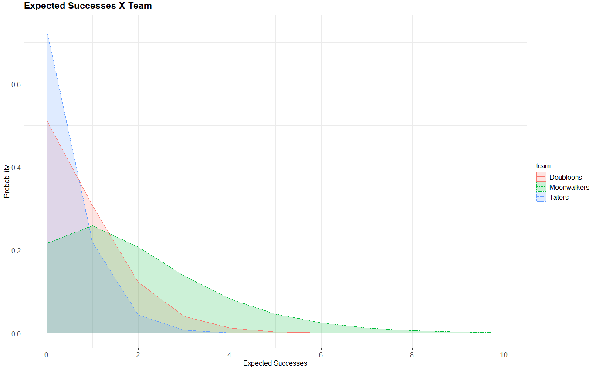

This past weekend's Riddler Classic pits three baseball teams against one another in a Goldilocks-esque showdown. In the Riddler Baseball League, does it pay to stack your team with infrequent sluggers? Frequent pitch magnets? Or take a tack somewhere down the middle with a jacks-of-all-bases team?
Riddler League Baseball, also known as the RLB, consists of three teams: the Mississippi Moonwalkers, the Delaware Doubloons and the Tennessee Taters.
Each time a batter for the Moonwalkers comes to the plate, they have a 40 percent chance of getting a walk and a 60 percent chance of striking out. Each batter for the Doubloons, meanwhile, hits a double 20 percent percent of the time, driving in any teammates who are on base, and strikes out the remaining 80 percent of the time. Finally, each batter for the Taters has a 10 percent chance of hitting a home run and a 90 percent chance of striking out.
During the RLB season, each team plays an equal number of games against each opponent. Games are nine innings long and can go into extra innings just like in other baseball leagues. Which of the three teams is most likely to have the best record at the end of the season?
Let's first summarize the probabilities and values of success (as success is in the eye of the batter) for each team:
| Team | Success Prob | Failure Prob | Success Value |
|---|---|---|---|
| Moonwalkers | 40% | 60% | 0.250 |
| Doubloons | 20% | 80% | 0.50 |
| Taters | 10% | 90% | 1.00 |
With these probabilities, we can generalize the expected number of successes for each team by describing the number of expected successes for each inning at bat; that is, we are interested in the number of successes before three strikeouts. The distribution that allows us to do this is the negative binomial distribution, which extends the geometric distribution and describes the number of k successes until a stopping criterion of n failures have been observed.
##### ------------------------------------- #####
##### ------------------------------------- #####
##### distribution modeling of expectations #####
##### ------------------------------------- #####
##### ------------------------------------- #####
### ------------------ ###
### expected successes ###
### ------------------ ###
expected_successes_cap <- 0:10
moonwalkers_expected_successes_df <- data.frame(team = 'Moonwalkers',
successes = expected_successes_cap,
prob = dnbinom(x = expected_successes_cap, # number of runs
size = 3, # end trial at 3 strikeouts
prob = 0.6)) %>% # probability of strikeout)
mutate_if(is.factor, as.character)
doubloons_expected_successes_df <- data.frame(team = 'Doubloons',
successes = expected_successes_cap,
prob = dnbinom(x = expected_successes_cap, # number of runs
size = 3, # end trial at 3 strikeouts
prob = 0.8)) %>% # probability of strikeout)
mutate_if(is.factor, as.character)
taters_expected_successes_df <- data.frame(team = 'Taters',
successes = expected_successes_cap,
prob = dnbinom(x = expected_successes_cap, # number of runs
size = 3, # end trial at 3 strikeouts
prob = 0.9)) %>% # probability of strikeout)
mutate_if(is.factor, as.character)
expected_successes_df <- moonwalkers_expected_successes_df %>%
rbind(doubloons_expected_successes_df) %>%
rbind(taters_expected_successes_df) %>%
mutate(runs = ifelse(team == 'Moonwalkers',
# moonwalkers runs
successes * 0.25,
ifelse(team == 'Doubloons',
# doubloons runs
successes * 0.50,
# taters runs
successes * 1.00)))
expected_successes_df %>%
ggplot(aes(x = successes,
y = prob,
group = team,
fill = team,
colour = team,
linetype = team)) +
geom_density(stat='identity',
alpha = 0.2) +
geom_line() +
scale_x_continuous(breaks=scales::pretty_breaks()) +
theme_bw() +
theme(legend.position='right',
legend.text=element_text(size=12),
plot.title=element_text(size=16, face='bold', vjust=2),
axis.title.x=element_text(size=12),
axis.title.y=element_text(size=12),
axis.text=element_text(size=12),
panel.border=element_blank()) +
labs(title= 'Expected Successes X Team',
x = 'Expected Successes',
y = 'Probability')

This helps us visualize our intuition from the table above: this is a competition between the infrequent-but-high-value Taters, the frequent-but-low-value Moonwalkers, and the Goldilocks Doubloons.
But those are just the expected successes, though -- not runs.
We could extend expected successes to runs. Or we could just go ahead and simulate a season.
First we'll get things prepared:
##### ----------------- #####
##### ----------------- #####
##### clean environment #####
##### ----------------- #####
##### ----------------- #####
rm(list=ls())
gc()
##### -------------- #####
##### -------------- #####
##### load libraries #####
##### -------------- #####
##### -------------- #####
library(tidyverse)
library(scales)
library(progress)
##### ------------- #####
##### ------------- #####
##### config params #####
##### ------------- #####
##### ------------- #####
set.seed(42)
teams_list <- list('Moonwalkers' = list(outcomes = list('pos' = list('val' = 1,
'prob_for' = 0.4),
'neg' = list('val' = 0,
'prob_for' = 0.6))),
'Doubloons' = list(outcomes = list('pos' = list('val' = 2,
'prob_for' = 0.2),
'neg' = list('val' = 0,
'prob_for' = 0.8))),
'Taters' = list(outcomes = list('pos' = list('val' = 4,
'prob_for' = 0.1),
'neg' = list('val' = 0,
'prob_for' = 0.9))))
n_games <- 1e5 # number of games each team will play against each other team
Then we'll define the functions that will help us simulate an entire season:
##### ------------------------- #####
##### ------------------------- #####
##### def funs to simulate game #####
##### ------------------------- #####
##### ------------------------- #####
### ---------------------- ###
### fun to simulate at-bat ###
### ---------------------- ###
bat <- function(team) {
# prob of positive outcome
prob_for <- teams_list[[team]]$outcomes$pos$prob_for
prob_against <- 1 - prob_for
# outcome
res <- sample(x = c(0, 1),
size = 1,
replace = F,
prob = c(prob_against, prob_for))
# return
return(res)
}
### -------------------------------------- ###
### fun to translate outcomes into results ###
### -------------------------------------- ###
outcomes_trans <- function(team, half_inning_res) {
# val of positive outcome
val <- teams_list[[team]]$outcomes$pos$val
# translate value into runs (four bases)
runs_trans_val <- val / 4
# get half-inning value
half_inning_val <- sum(half_inning_res) * runs_trans_val
# round down to account for runners stranded on bases
half_inning_val <- floor(half_inning_val)
# return
return(half_inning_val)
}
### ----------------------------------------- ###
### fun to simulate half inning (team at bat) ###
### ----------------------------------------- ###
half_inning <- function(team, bat_res = NULL) {
# init
if(is.null(bat_res)) {
# init bat_res vec
bat_res <- vector()
}
# simulate at-bat
bat_out <- bat(team)
# update bat_res
bat_res <- c(bat_res, bat_out)
# break case = bat_res contains three zeroes (strike-outs)
if(length(bat_res[bat_res == 0]) == 3) {
# translate outcome to runs
inning_out <- sum(bat_res)
inning_runs <- outcomes_trans(team, inning_out)
return(inning_runs)
} else {
# return score
return(half_inning(team = team, bat_res = bat_res))
}
}
### -------------------- ###
### fun to simulate game ###
### -------------------- ###
game <- function(team1, team2) {
# -------------------- #
# init innings counter #
# -------------------- #
innings_counter <- 9
# ----------------- #
# get 9 innings val #
# ----------------- #
# init scores
team1_score <- 0L
team2_score <- 0L
# simulate regular game
for(i in 1:9) {
inning_score_team1 <- half_inning(team1)
inning_score_team2 <- half_inning(team2)
team1_score <- team1_score + inning_score_team1
team2_score <- team2_score + inning_score_team2
}
# ------------------------------------------------- #
# if tied, simulate extra innings until a team wins #
# ------------------------------------------------- #
while(team1_score == team2_score) {
# update team1 score for extra inning
team1_extra_inning_score <- half_inning(team1)
team1_score <- team1_score + team1_extra_inning_score
# update team2 score for extra inning
team2_extra_inning_score <- half_inning(team2)
team2_score <- team2_score + team2_extra_inning_score
innings_counter <- innings_counter + 1
}
# ------ #
# return #
# ------ #
return(list('team1_score' = team1_score,
'team2_score' = team2_score,
'n_innings' = innings_counter))
}
And now we'll put it all together in a simulation:
##### --------------- #####
##### --------------- #####
##### simulate season #####
##### --------------- #####
##### --------------- #####
### -------------------- ###
### config season params ###
### -------------------- ###
# ------------------------------------------ #
# get matchups (unordered 2-tuples of teams) #
# ------------------------------------------ #
season_matchups_list <- combn(x = names(teams_list),
m = 2,
simplify = F)
### ------------------------------------------ ###
### populate season_res_df with season results ###
### ------------------------------------------ ###
# ------------------ #
# init season_res_df #
# ------------------ #
season_res_df <- data.frame(matchup_game = rep(1:n_games, length(season_matchups_list)),
team_1 = rep(c(unlist(season_matchups_list)[rep(c(T, F),
length(unlist(season_matchups_list)) / 2)]),
n_games),
team_2 = rep(c(unlist(season_matchups_list)[rep(c(F, T),
length(unlist(season_matchups_list)) / 2)]),
n_games)) %>%
mutate_if(is.factor, as.character) %>%
rowwise() %>%
mutate(team_tuple = paste0(c(team_1, team_2), collapse='|')) %>%
arrange(team_tuple)
### -------------- ###
### simulate games ###
### -------------- ###
unique_matchups <- unique(season_res_df$team_tuple)
pb <- progress_bar$new(
format = 'simulating games (:spin) [:bar] :percent eta: :eta',
total = n_games * length(unique_matchups), clear = FALSE, width= 80)
# ------------------------- #
# init vecs to hold results #
# ------------------------- #
matchups_score_team_1_vec <- vector()
matchups_score_team_2_vec <- vector()
matchups_winning_team_vec <- vector()
matchups_n_innings_vec <- vector()
for(i in 1:length(unique_matchups)) {
# ---------------- #
# get curr matchup #
# ---------------- #
curr_matchup <- unique_matchups[i]
curr_teams <- str_split(string = curr_matchup,
pattern = '\\|')[[1]]
curr_team_1 <- curr_teams[1]
curr_team_2 <- curr_teams[2]
# ------------------------------- #
# simulate games for curr_matchup #
# and update vectors with results #
# ------------------------------- #
for(j in 1:n_games) {
# ------------- #
# simulate game #
# ------------- #
curr_matchup_game_res <- game(curr_team_1, curr_team_2)
# ---------------- #
# get game results #
# ---------------- #
curr_matchup_game_score_team_1 <- curr_matchup_game_res$team1_score
curr_matchup_game_score_team_2 <- curr_matchup_game_res$team2_score
curr_matchup_game_n_innings <- curr_matchup_game_res$n_innings
curr_matchup_game_winner <- ifelse(curr_matchup_game_score_team_1 > curr_matchup_game_score_team_2,
curr_team_1,
curr_team_2)
# ----------------------------- #
# update running matchup totals #
# ----------------------------- #
matchups_score_team_1_vec <- c(matchups_score_team_1_vec,
curr_matchup_game_score_team_1)
matchups_score_team_2_vec <- c(matchups_score_team_2_vec,
curr_matchup_game_score_team_2)
matchups_winning_team_vec <- c(matchups_winning_team_vec,
curr_matchup_game_winner)
matchups_n_innings_vec <- c(matchups_n_innings_vec,
curr_matchup_game_n_innings)
# ------------------ #
# increment progress #
# ------------------ #
pb$tick()
}
}
### -------------------- ###
### update season_res_df ###
### -------------------- ###
season_res_df$score_team_1 <- matchups_score_team_1_vec
season_res_df$score_team_2 <- matchups_score_team_2_vec
season_res_df$winner <- matchups_winning_team_vec
season_res_df$n_innings <- matchups_n_innings_vec
### ------------- ###
### tally results ###
### ------------- ###
season_matchup_res_df <- season_res_df %>%
group_by(team_tuple) %>%
summarise(n_games = n(),
team_1_wins = nrow(.[.$team_tuple == team_tuple & .$score_team_1 > .$score_team_2, ]),
team_2_wins = nrow(.[.$team_tuple == team_tuple & .$score_team_1 < .$score_team_2, ]),
mean_n_innings = mean(n_innings)) %>%
mutate(team_1_avg = team_1_wins / (team_1_wins + team_2_wins)) %>%
mutate(team_2_avg = team_2_wins / (team_1_wins + team_2_wins))
season_team_res_df <- data.frame(team = unique(c(season_res_df$team_1, season_res_df$team_2))) %>%
mutate_if(is.factor, as.character) %>%
mutate(n_games = n_games * (length(names(teams_list)) - 1)) %>%
rowwise() %>%
mutate(n_wins = season_res_df[(season_res_df$winner == team), ] %>% nrow(),
win_rate = n_wins / n_games)
And with the final runs of the seemingly never-ending Riddler Fall Classic tallied, we have the following:
| team | n_games | n_wins | win_rate |
|---|---|---|---|
| Doubloons | 200000 | 79530 | 0.39765 |
| Moonwalkers | 200000 | 75752 | 0.37876 |
| Taters | 200000 | 144718 | 0.72359 |
And the specific matchups:
| team_tuple | n_games | team_1_wins | team_2_wins | mean_n_innings | team_1_avg | team_2_avg |
|---|---|---|---|---|---|---|
| Doubloons|Taters | 100000 | 28360 | 71640 | 9.44457 | 0.28360 | 0.71640 |
| Moonwalkers|Doubloons | 100000 | 48830 | 51170 | 9.73793 | 0.48830 | 0.51170 |
| Moonwalkers|Taters | 100000 | 26922 | 73078 | 9.44819 | 0.26922 | 0.73078 |